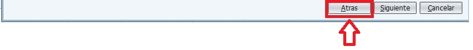
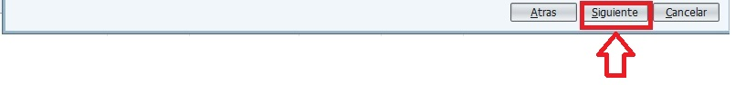
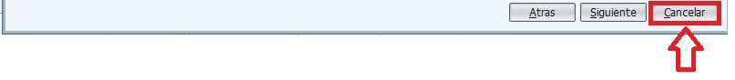

En parte inferior derecha de la aplicación encontramos el panel de botones de navegabilidad con los cuales podremos ir cambiando entre los diferentes paneles de los que dispone la aplicación.
Para volver al panel anterior debe pulsar el botón "Atrás". Al hacerlo, se borrarán todos los datos introducidos en el panel actual.
Para pasar al siguiente panel y guardar los datos introducidos en el panel actual debe pulsar el botón "Siguiente".
Para cancelar la reserva actual, borrar todos los datos guardados hasta este momento y volver al panel de inicio debe pulsar el botón "Cancelar".
